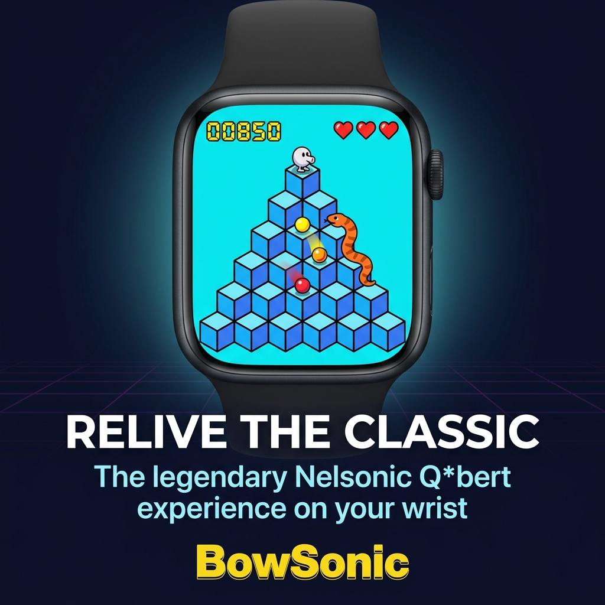
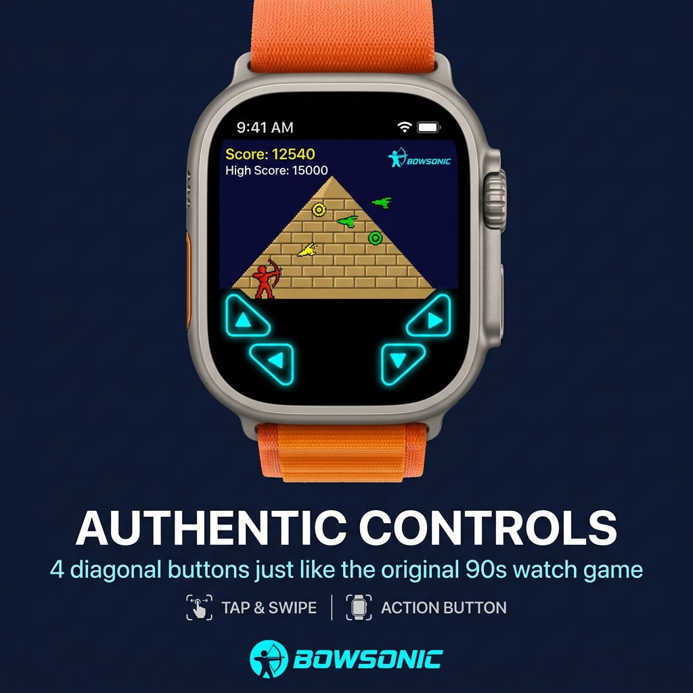
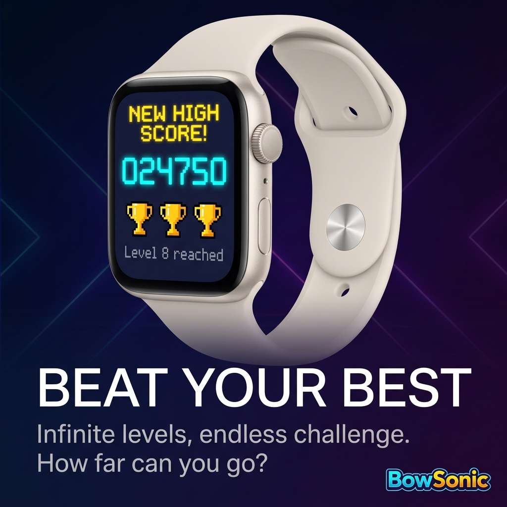
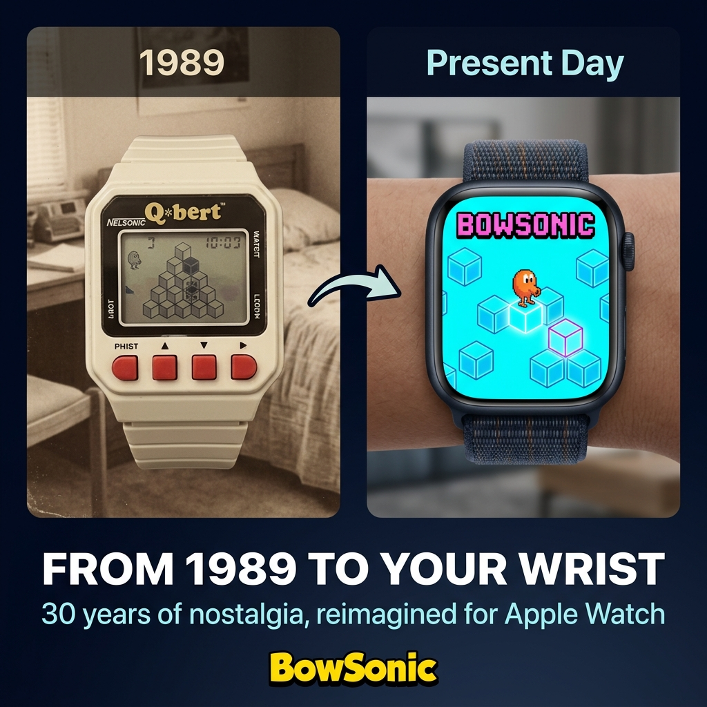
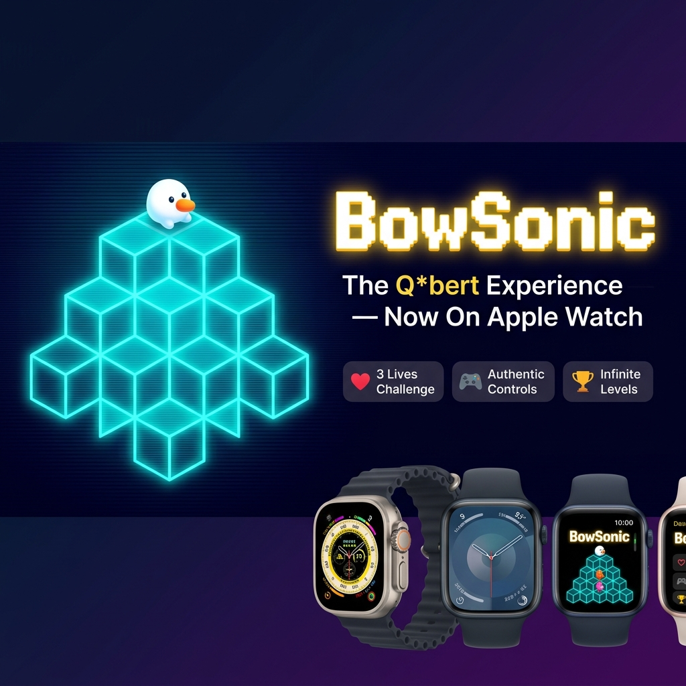

El Clásico Arcade En tu Muñeca
BowSonic replica con precisión pixel-perfect el clásico juego de saltos en pirámides LCD de los años 90. Diseñado exclusivamente para watchOS, combinando controles táctiles y el uso de la corona digital.

Características Principales
Todo el encanto y la jugabilidad de las consolas de mano retro de cristal líquido directamente en tu Apple Watch.
Control de Corona Digital
Mueve a BowBert de forma fluida a través de la pirámide de cubos usando giros precisos con el Digital Crown de tu reloj.
Gráficos Pixel-Perfect
Estilo LCD de 1 bit de alta fidelidad, fiel al diseño de hardware original con animaciones fluidas a través de SpriteKit.
Audio Retro Nativo
Efectos de sonido arcade combinados con feedback háptico (vibraciones del motor Taptic Engine) para una experiencia inmersiva.
Tabla de Records Local
Compite contigo mismo por superar tu propio puntaje récord. Los puntajes se guardan local y de forma segura en watchOS.
Dificultad Dinámica
Múltiples niveles de dificultad infinita con incrementos en la velocidad de spawn de Coily y los demás enemigos tradicionales.
Optimizado para Batería
Optimización nativa en Swift y SpriteKit diseñada para consumir el mínimo de batería en modelos de Apple Watch antiguos y nuevos.
Capturas de Pantalla
Explora la interfaz retro neon y los modos de juego de BowSonic.



